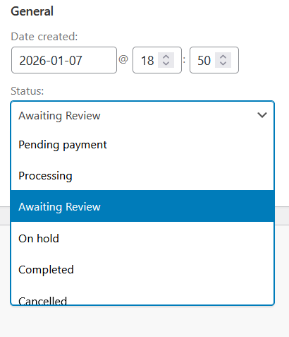
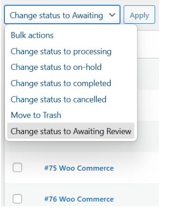
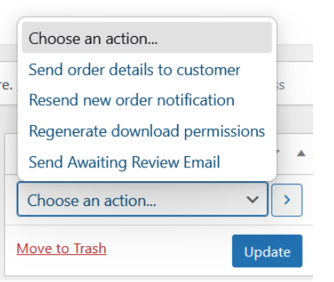
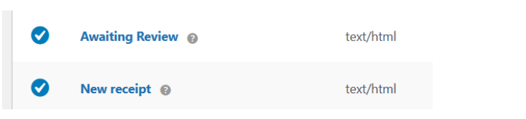
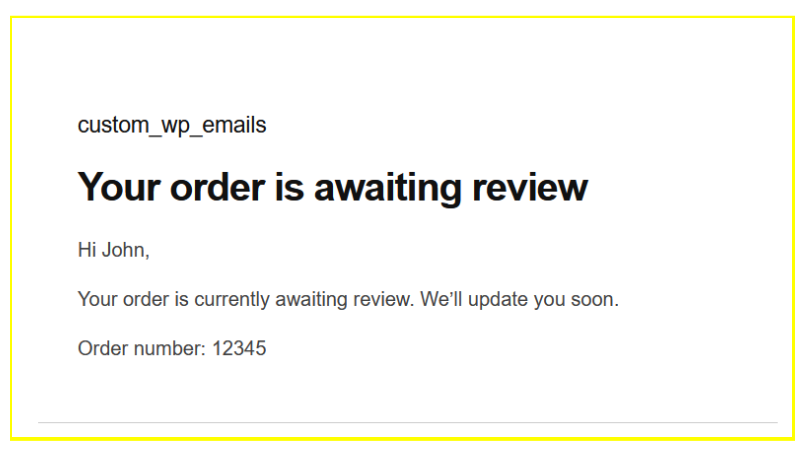

About this sample
- What this is: A step-by-step tutorial for building a production-ready WooCommerce plugin that adds a custom order status with automated customer email notifications.
- Audience: Intermediate WordPress and WooCommerce developers comfortable with PHP and WordPress hooks.
- Tools used: WordPress, WooCommerce, PHP, HPOS (High-Performance Order Storage), WC_Email.
- What it demonstrates: How to extend WooCommerce at multiple integration points — status registry, admin UI, and mailer — within a single plugin, and how to document each step so it produces a result you can test.
- Behind the docs: Read the case study →
Build a custom WooCommerce order status with customer email notifications
Background
The default installation of WooCommerce does not include the option to add a custom order status. Some stores need to place certain orders into a manual review state before fulfillment (for example, fraud checks or stock confirmation). In this tutorial, you'll implement an "Awaiting Review" status and a customer email that communicates what it means and what happens next.
This tutorial follows a live-site ready approach:
- Status registration
- Admin workflows
- Customer email notifications
- Testing
Some common reasons to add a custom "Awaiting Review" order status include:
- Fraud or payment verification: hold flagged or high-value orders for manual review before fulfillment.
- Inventory confirmation: pause fulfillment until stock or supplier availability is confirmed.
- Support investigation: give staff a safe holding state while resolving issues, with a clear customer message.
This tutorial walks you through the core steps required to add a new order status and integrate it into the WooCommerce order lifecycle. You can adapt these steps to fit your specific use case.
Overview
The diagram below shows the high-level lifecycle of a custom WooCommerce order status, from registration to customer notification.
flowchart LR
A[Order Created] --> B[Custom Status Registered]
B --> C[Order Status Transition]
C --> D{Trigger Email?}
D -->|Yes| E[Send Customer Email]
D -->|No| F[No Notification]
C --> G[Admin UI Updated]Learning objectives
By the end of this tutorial, you'll be able to:
- Add a custom order status to WooCommerce.
- Add admin workflows to apply the status (bulk + single-order action).
- Create and register a custom WC_Email notification.
- Trigger the email manually (admin action) and automatically (on status change).
- Verify the feature with a QA checklist.
Intended audience and background knowledge
This tutorial is for developers who can:
- Create a basic WordPress plugin
- Read PHP and WordPress hooks/filters
- Navigate WooCommerce admin screens
Prerequisite background knowledge
You should be familiar with:
- WordPress plugin structure (wp-content/plugins)
- WooCommerce orders and order statuses
- Basic debugging (logs/order notes)
Before you begin
Prerequisites
- A local WordPress site with WooCommerce installed
- Your site is using the new WooCommerce Orders experience (HPOS / wc-orders) (as in your build)
- A code editor
- Optional (recommended): an email logging plugin to view outbound emails locally
Project structure (recommended)
You'll create a plugin with this structure:
wc-custom-order-status/
├── wc-custom-order-status.php # Main plugin file
├── includes/
│ ├── admin-bulk-actions.php
│ ├── admin-order-actions.php
│ ├── status-email-triggers.php
│ └── emails/
│ └── class-wc-email-awaiting-review.php
└── templates/
└── emails/
├── custom-status-email.php
└── plain/
└── custom-status-email.php
Steps
Step 1: Create the plugin scaffold
In this step, you'll create the minimum file and folder structure required for WordPress to recognize and activate your plugin.
1. Create the plugin directory
Create a new folder:
wp-content/plugins/wc-custom-order-status/
2. Create the main plugin file
Inside that folder, create:
wc-custom-order-status.php
You'll add the plugin header and an ABSPATH guard in the next step.
3. Create supporting folders
Create these folders (we'll use them later for implementation and email templates):
includes/
templates/
Optional (WooCommerce-friendly expansion):
If you prefer to organize email code and templates from the start, you can also add:
includes/emails/
templates/emails/
Result
WordPress can detect and activate the plugin, and you have a clean structure to build on.
Next: Register the Awaiting Review order status so it appears in the WooCommerce admin order workflow.
Step 2: Register the Awaiting Review order status
In this step, you'll register a new WooCommerce order status and make it selectable in the admin order screen.
2.1 Register the custom order status
Use register_post_status() to register a new status called
wc-awaiting-review.
WooCommerce order statuses are registered as WordPress post statuses and
must be prefixed with wc-.
add_action( 'init', 'wc_register_awaiting_review_status' );
function wc_register_awaiting_review_status() {
register_post_status(
'wc-awaiting-review',
array(
'label' => 'Awaiting Review',
'public' => true,
'exclude_from_search' => false,
'show_in_admin_all_list' => true,
'show_in_admin_status_list' => true,
)
);
}
This makes the status known to WordPress and visible in the admin interface.
2.2 Add the status to WooCommerce's status list
Registering the post status alone is not enough. You must also add it to WooCommerce's internal list of order statuses so it appears in dropdowns and filters.
add_filter(
'wc_order_statuses',
'wc_add_awaiting_review_to_order_statuses'
);
function wc_add_awaiting_review_to_order_statuses( $order_statuses ) {
$new_statuses = array();
foreach ( $order_statuses as $key => $label ) {
$new_statuses[ $key ] = $label;
if ( 'wc-processing' === $key ) {
$new_statuses['wc-awaiting-review'] = 'Awaiting Review';
}
}
return $new_statuses;
}
This example inserts Awaiting Review immediately after Processing, which keeps the workflow intuitive for store staff.
You can adjust the insertion point to match your store's fulfillment process.
2.3 Verify the status appears in the admin
At this point, the status should be selectable in WooCommerce.
Test it now:
-
Go to WooCommerce → Orders
-
Open any order
-
Open the Status dropdown
-
Confirm Awaiting Review appears in the list

Figure 2.3 - Order status dropdown showing the custom Awaiting Review status
Result
The Awaiting Review status is now registered and available in the WooCommerce admin panel.
In the next step, you'll connect this status to a customer email notification so customers understand what happens next.
Step 3: Add bulk actions in the Orders list (HPOS / wc-orders)
In this step, you'll add a bulk action that lets staff move multiple
orders to Awaiting Review at once. This implementation targets the
HPOS (High-Performance Order Storage) Orders screen (WooCommerce →
Orders, URL: admin.php?page=wc-orders).
3.1 Create includes/admin-bulk-actions.php
Create the file:
wp-content/plugins/wc-custom-order-status/includes/admin-bulk-actions.php
Add the following code:
<?php
/**
* Admin: Bulk actions for WooCommerce Orders screen (HPOS / wc-orders).
*
* @package wc-custom-order-status
*/
if ( ! defined( 'ABSPATH' ) ) {
exit;
}
/**
* Add "Change status to Awaiting Review" to bulk actions on the new Orders screen.
* Screen URL: /wp-admin/admin.php?page=wc-orders
*/
add_filter( 'bulk_actions-woocommerce_page_wc-orders', function( $bulk_actions ) {
$bulk_actions['mark_awaiting-review'] = __( 'Change status to Awaiting Review', 'wc-custom-order-status' );
return $bulk_actions;
} );
/**
* Handle the bulk action: set selected orders to awaiting-review.
*
* Note: update_status() expects the status slug WITHOUT the 'wc-' prefix.
*/
add_filter( 'handle_bulk_actions-woocommerce_page_wc-orders', function( $redirect_url, $action, $order_ids ) {
if ( 'mark_awaiting-review' !== $action ) {
return $redirect_url;
}
$changed = 0;
foreach ( (array) $order_ids as $order_id ) {
$order = wc_get_order( $order_id );
if ( ! $order ) {
continue;
}
$order->update_status(
'awaiting-review',
__( 'Bulk action: Awaiting Review', 'wc-custom-order-status' )
);
$changed++;
}
return add_query_arg(
array( 'bulk_awaiting_review' => $changed ),
$redirect_url
);
}, 10, 3 );
/**
* Admin notice after applying bulk action.
*/
add_action( 'admin_notices', function() {
if ( empty( $_GET['bulk_awaiting_review'] ) ) {
return;
}
$count = (int) $_GET['bulk_awaiting_review'];
printf(
'<div class="notice notice-success is-dismissible"><p>%s</p></div>',
esc_html(
sprintf(
_n(
'%d order set to Awaiting Review.',
'%d orders set to Awaiting Review.',
$count,
'wc-custom-order-status'
),
$count
)
)
);
} );
What this file does:
- Adds a bulk action named Change status to Awaiting Review to the Orders list UI.
- Handles the action by looping through selected orders and calling
update_status( 'awaiting-review' ). - Adds an admin notice showing how many orders were updated.
3.2 Load the bulk-actions file from your main plugin file
In your main plugin file (wc-custom-order-status.php), include the file
so it runs in wp-admin:
require_once __DIR__ . '/includes/admin-bulk-actions.php';
3.3 Test it now
-
Go to WooCommerce → Orders
-
Select multiple orders using the checkboxes
-
Open Bulk actions
-
Choose Change status to Awaiting Review
-
Click Apply
-
Confirm:
-
the selected orders update to Awaiting Review
-
you see a success notice (for example: "3 orders set to Awaiting Review.")
-
Result
Store staff can now set Awaiting Review on multiple orders in a single action — useful for fraud review queues, inventory holds, or support investigations.

Figure 3.3 - Drop-down in Bulk Actions showing Change status to Awaiting Review in the WooCommerce Orders Panel.
Step 4: Add a single-order admin action (Order actions dropdown)
In this step, you'll add an admin-only action to the Order actions dropdown on the order edit screen. Staff can use it to manually send the Awaiting Review email for a single order (useful for edge cases and support workflows).
4.1 Add an order action to the dropdown
Create a new file:
includes/admin-order-actions.php
Add an action to the Order actions dropdown using the
woocommerce_order_actions filter.
<?php
/**
* Admin: Single-order action for the WooCommerce Order actions dropdown.
*
* @package wc-custom-order-status
*/
if ( ! defined( 'ABSPATH' ) ) {
exit;
}
add_filter( 'woocommerce_order_actions', function( $actions ) {
// Action keys should be unique and slug-like.
$actions['wc_cos_send_awaiting_review_email'] = __(
'Send Awaiting Review Email',
'wc-custom-order-status'
);
return $actions;
} );
4.2 Handle the action when an admin runs it
WooCommerce fires a dynamic hook when the action is executed:
woocommerce_order_action_{your_action_key}
Add the handler hook using the same action key you registered above:
add_action(
'woocommerce_order_action_wc_cos_send_awaiting_review_email',
function ( $order ) {
if ( ! $order || ! is_a( $order, 'WC_Order' ) ) {
return;
}
// Add an order note for auditability (admins can see when/why it was sent).
$order->add_order_note(
__( 'Admin action: Sent Awaiting Review email.', 'wc-custom-order-status' )
);
/**
* Trigger your custom email.
*
* Replace this placeholder with the actual trigger you implement in the email step.
* Common patterns:
* - Call your custom email class directly (recommended)
* - Use WC()->mailer() to access registered email instances
*/
do_action( 'wc_cos_trigger_awaiting_review_email', $order->get_id(), $order );
}
);
Why the do_action() placeholder?
- It lets you ship Step 4 without coupling it tightly to your email class structure.
- In the next step, you'll hook your email implementation to
wc_cos_trigger_awaiting_review_email.
If you already have your email class, you can replace the placeholder with your direct call later — no need to change Step 4's UI wiring.
4.3 Load the module from your main plugin file
In wc-custom-order-status.php, include the file:
require_once __DIR__ . '/includes/admin-order-actions.php';
4.4 Test it now
-
Go to WooCommerce → Orders
-
Open an order
-
Find the Order actions dropdown (usually in the Order actions box on the right)
-
Select Send Awaiting Review Email
-
Click the arrow button next to the dropdown (not the main Update button)
-
Confirm an order note appears (for example: "Admin action: Sent Awaiting Review email.")
Result

Figure 4.4 - Add an action to the Order Actions dropdown
Admins can manually trigger the Awaiting Review email for a single order, with a logged order note for traceability.
Next: Implement the custom email itself and hook it to
wc_cos_trigger_awaiting_review_email so this action actually sends the
message.
Step 5: Create and register the custom WooCommerce email class
In this step, you'll create a custom WooCommerce email (WC_Email) for
Awaiting Review, register it so it appears under WooCommerce →
Settings → Emails, and wire it to the trigger hook you added in Step 4.
5.1 Create the email class file
Create this file:
includes/emails/class-wc-email-awaiting-review.php
Add the following code:
<?php
/**
* Email: Awaiting Review
*
* @package wc-custom-order-status
*/
if ( ! defined( 'ABSPATH' ) ) {
exit;
}
if ( ! class_exists( 'WC_Email' ) ) {
return;
}
class WC_Email_Awaiting_Review extends WC_Email {
/**
* Constructor.
*/
public function __construct() {
$this->id = 'awaiting_review';
$this->customer_email = true;
$this->title = __( 'Awaiting Review', 'wc-custom-order-status' );
$this->description = __( 'Sent to customers when an order is placed into Awaiting Review.', 'wc-custom-order-status' );
$this->heading = __( 'Your order is awaiting review', 'wc-custom-order-status' );
$this->subject = __( '[{site_title}] Your order is awaiting review', 'wc-custom-order-status' );
// Templates (overrideable by themes if you place them under /woocommerce/emails/).
$this->template_html = 'emails/customer-awaiting-review.php';
$this->template_plain = 'emails/plain/customer-awaiting-review.php';
// Point WooCommerce at this plugin's templates directory.
$this->template_base = trailingslashit( plugin_dir_path( __FILE__ ) ) . '../../templates/';
parent::__construct();
/**
* Trigger hook from Step 4.
* Passes ($order_id, $order) to make it easy to send to the right recipient.
*/
add_action( 'wc_cos_trigger_awaiting_review_email', array( $this, 'trigger' ), 10, 2 );
}
/**
* Trigger the email.
*
* @param int $order_id
* @param WC_Order|null $order
*/
public function trigger( $order_id, $order = null ) {
if ( $order_id && ! $order ) {
$order = wc_get_order( $order_id );
}
if ( ! $order ) {
return;
}
$this->object = $order;
$this->recipient = $order->get_billing_email();
if ( ! $this->is_enabled() || ! $this->get_recipient() ) {
return;
}
// Used by Woo templates (order details, etc.)
$this->placeholders = array(
'{order_date}' => wc_format_datetime( $order->get_date_created() ),
'{order_number}' => $order->get_order_number(),
);
$this->send(
$this->get_recipient(),
$this->get_subject(),
$this->get_content(),
$this->get_headers(),
$this->get_attachments()
);
}
/**
* Get content in HTML format.
*/
public function get_content_html() {
return wc_get_template_html(
$this->template_html,
array(
'order' => $this->object,
'email_heading' => $this->get_heading(),
'sent_to_admin' => false,
'plain_text' => false,
'email' => $this,
),
'', // default template path inside theme
$this->template_base
);
}
/**
* Get content in plain text format.
*/
public function get_content_plain() {
return wc_get_template_html(
$this->template_plain,
array(
'order' => $this->object,
'email_heading' => $this->get_heading(),
'sent_to_admin' => false,
'plain_text' => true,
'email' => $this,
),
'',
$this->template_base
);
}
}
5.2 Create the email templates
Create these template files:
HTML template
Create this file:
templates/emails/customer-awaiting-review.php
<?php
/**
* Customer Awaiting Review email (HTML)
*
* @package wc-custom-order-status
*/
if ( ! defined( 'ABSPATH' ) ) {
exit;
}
do_action( 'woocommerce_email_header', $email_heading, $email );
?>
<p>
<?php
/* translators: %s: order number */
echo esc_html(
sprintf(
__( 'Order #%s is awaiting review.', 'wc-custom-order-status' ),
$order->get_order_number()
)
);
?>
</p>
<p>
<?php
esc_html_e(
"We're performing a quick manual review before your order moves into processing.",
'wc-custom-order-status'
);
?>
</p>
<p>
<?php
esc_html_e(
"Next step: no action is required from you. We'll send a follow-up email as soon as your order is approved and processing begins.",
'wc-custom-order-status'
);
?>
</p>
<?php
do_action( 'woocommerce_email_order_details', $order, $sent_to_admin, $plain_text, $email );
do_action( 'woocommerce_email_footer', $email );
Plain-text template
templates/emails/plain/customer-awaiting-review.php
<?php
/**
* Customer Awaiting Review email (plain text)
*
* @package wc-custom-order-status
*/
if ( ! defined( 'ABSPATH' ) ) {
exit;
}
echo $email_heading . "\n\n";
esc_html_e(
'Thanks for your order. Your order is currently awaiting review. No action is required on your part.',
'wc-custom-order-status'
);
echo "\n\n";
esc_html_e(
"We'll send a follow-up email as soon as your order is approved and processing begins.",
'wc-custom-order-status'
);
echo "\n\n";
do_action( 'woocommerce_email_order_details', $order, $sent_to_admin, $plain_text, $email );
5.3 Register your email with WooCommerce
Add an initializer file so your main plugin file stays tidy:
includes/emails/register-emails.php
<?php
/**
* Register custom WooCommerce emails.
*
* @package wc-custom-order-status
*/
if ( ! defined( 'ABSPATH' ) ) {
exit;
}
/**
* Make sure WC_Email exists before loading our email class.
* woocommerce_email_classes runs after WooCommerce has loaded its mailer.
*/
add_filter( 'woocommerce_email_classes', function( $email_classes ) {
require_once __DIR__ . '/class-wc-email-awaiting-review.php';
$email_classes['WC_Email_Awaiting_Review'] = new WC_Email_Awaiting_Review();
return $email_classes;
} );
Then include the registration file from your main plugin file:
require_once __DIR__ . '/includes/emails/register-emails.php';
Why register via woocommerce_email_classes? It ensures your email is
loaded at the right time — after WooCommerce has loaded its mailer and
WC_Email is available.
5.4 Test it now
-
Go to WooCommerce → Settings → Emails
-
Confirm Awaiting Review appears in the list of emails
-
Click it and confirm you can:
-
enable/disable the email
-
edit the subject/heading (if desired)
-
Result

Figure 5.4 - Customer email template
Your custom Awaiting Review email is now registered in WooCommerce and can be managed in the admin. In the next step, you'll validate the end-to-end flow by triggering it from the Order actions dropdown and confirming delivery.
Step 6: Add minimal email templates (HTML + plain text)
In this step, you'll create the actual email templates for your Awaiting Review email — one HTML template and one plain-text template. Each template should clearly communicate:
- the order number
- what Awaiting Review means
- what happens next (and what the customer needs to do: usually nothing)
The email class you created in Step 5 loads these templates.
6.1 Create the HTML email template
Create this file:
templates/emails/custom-status-email.php
Add the following template code:
<?php
/**
* Custom status email (HTML): Awaiting Review
*
* Expected variables:
* @var WC_Order $order
* @var string $email_heading
* @var bool $sent_to_admin
* @var bool $plain_text
* @var WC_Email $email
*
* @package wc-custom-order-status
*/
if ( ! defined( 'ABSPATH' ) ) {
exit;
}
do_action( 'woocommerce_email_header', $email_heading, $email );
?>
<p>
<?php
/* translators: %s: order number */
echo esc_html(
sprintf(
__( 'Order #%s is awaiting review.', 'wc-custom-order-status' ),
$order->get_order_number()
)
);
?>
</p>
<p>
<?php
esc_html_e(
"We're performing a quick manual review before your order moves into processing.",
'wc-custom-order-status'
);
?>
</p>
<p>
<?php
esc_html_e(
"Next step: no action is required from you. We'll send a follow-up email as soon as your order is approved and processing begins.",
'wc-custom-order-status'
);
?>
</p>
<?php
do_action( 'woocommerce_email_order_details', $order, $sent_to_admin, $plain_text, $email );
do_action( 'woocommerce_email_footer', $email );
Notes:
woocommerce_email_header/woocommerce_email_footergives you the consistent WooCommerce email wrapper (logo, styling, footer text).- The message is intentionally minimal and customer-focused.
6.2 Create the plain-text email template
Create this file:
templates/emails/plain/custom-status-email.php
Add the following:
<?php
/**
* Custom status email (plain text): Awaiting Review
*
* Expected variables:
* @var WC_Order $order
* @var string $email_heading
* @var bool $sent_to_admin
* @var bool $plain_text
* @var WC_Email $email
*/
if ( ! defined( 'ABSPATH' ) ) {
exit;
}
echo $email_heading . "\n\n";
/* translators: %s: order number */
echo sprintf( __( 'Order #%s is awaiting review.', 'wc-custom-order-status' ), $order->get_order_number() ) . "\n\n";
esc_html_e( 'What this means: we\'re performing a quick manual review before your order moves into processing.', 'wc-custom-order-status' );
echo "\n\n";
esc_html_e( 'Next step: no action is required from you. We\'ll send a follow-up email as soon as your order is approved and processing begins.', 'wc-custom-order-status' );
echo "\n\n";
do_action( 'woocommerce_email_order_details', $order, $sent_to_admin, $plain_text, $email );
6.3 Point your email class at these template files
In your WC_Email class (from Step 5), make sure the template names match
these paths:
$this->template_html = 'emails/custom-status-email.php';
$this->template_plain = 'emails/plain/custom-status-email.php';
And ensure template_base points to your plugin's templates/ directory.
6.4 Test it now
You can test in either of these ways:
Option A: Preview from WooCommerce Email settings (if available)
- Go to WooCommerce → Settings → Emails
- Open Awaiting Review
- Use the preview / test send option if your WooCommerce version provides it
Option B (reliable): Trigger it from your admin order action
- Go to WooCommerce → Orders
- Open an order
- In Order actions, select Send Awaiting Review Email
- Click the arrow button next to the dropdown
- Confirm:
- a new order note appears (from Step 4)
- the customer email is sent (check MailHog / email logs / inbox, depending on your setup)
Result
Your custom email now has clean, minimal templates for both HTML and plain text, and customers get a clear explanation of what Awaiting Review means and what happens next.

Figure 6.4 - Awaiting Review email template
Step 7: Trigger the email automatically when the status changes
In this final step, you'll send the Awaiting Review email automatically whenever an order transitions into the awaiting-review status. You'll also add an optional "send once" safeguard to prevent duplicate emails and log the send as an order note.
7.1 Create includes/status-email-triggers.php
Create the file:
includes/status-email-triggers.php
Add the following code:
<?php
/**
* Status-based email triggers.
*
* @package wc-custom-order-status
*/
if ( ! defined( 'ABSPATH' ) ) {
exit;
}
/**
* When an order enters "awaiting-review", trigger the customer email.
*
* Hook name format:
* woocommerce_order_status_{new_status}
* (status slug without "wc-" prefix)
*/
add_action(
'woocommerce_order_status_awaiting-review',
function ( $order_id, $order = null ) {
// WooCommerce usually passes $order_id only, but some contexts may also provide $order.
if ( ! $order && $order_id ) {
$order = wc_get_order( $order_id );
}
if ( ! $order ) {
return;
}
/**
* Optional: prevent duplicate sends.
* This is helpful if staff manually re-save or reapply the same status.
*/
$already_sent = (bool) $order->get_meta( '_wc_cos_awaiting_review_email_sent', true );
if ( $already_sent ) {
return;
}
/**
* Trigger the email by calling the email class.
* We fetch it from WooCommerce's mailer so the instance is properly registered.
*/
$mailer = WC()->mailer();
$emails = $mailer->get_emails();
if ( isset( $emails['WC_Email_Awaiting_Review'] ) && is_object( $emails['WC_Email_Awaiting_Review'] ) ) {
$emails['WC_Email_Awaiting_Review']->trigger( $order->get_id(), $order );
// Mark as sent (so it only sends once).
$order->update_meta_data( '_wc_cos_awaiting_review_email_sent', 1 );
$order->save();
// Optional: add an order note for auditability.
$order->add_order_note(
__( 'Awaiting Review email sent automatically on status change.', 'wc-custom-order-status' )
);
}
},
10,
2
);
What this does:
- Listens for the status transition into awaiting-review
- Sends your custom email via the registered WooCommerce mailer
- Optionally prevents duplicate sends
- Logs an order note after sending
7.2 Load the trigger file from your main plugin file
In wc-custom-order-status.php, include the file:
require_once __DIR__ . '/includes/status-email-triggers.php';
Tip
Include this file after your email registration code (Step 5). This ensures the email class is registered before the trigger fires.
7.3 Test it now
- Create a new test order (or use an existing test order)
- Go to WooCommerce → Orders and open the order
- Change the order status to Awaiting Review and save/update
- Confirm:
- an order note appears: "Awaiting Review email sent automatically on status change."
- the email is sent (check your mail logger / MailHog / SMTP logs / inbox)
Result
Orders that enter Awaiting Review now automatically notify customers — without requiring staff to manually trigger the email — while still giving you protection against duplicate sends.
Summary
In this tutorial, you:
- Implemented a custom WooCommerce order status
- Added admin workflows to apply the status (bulk + single order)
- Built a custom
WC_Emailnotification and templates - Triggered emails manually and on status change
- Validated the feature using a QA-style approach